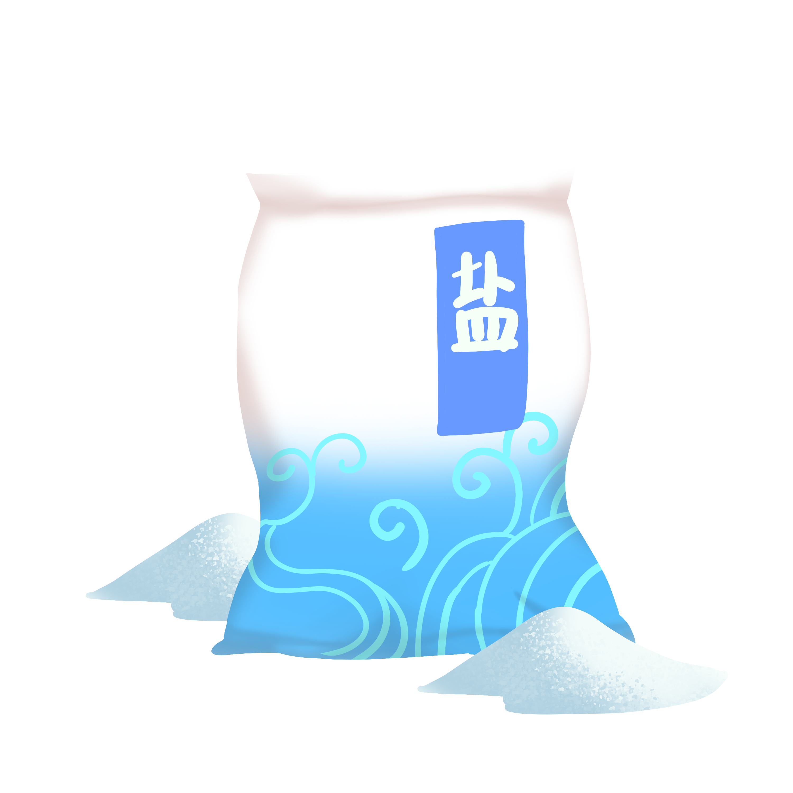
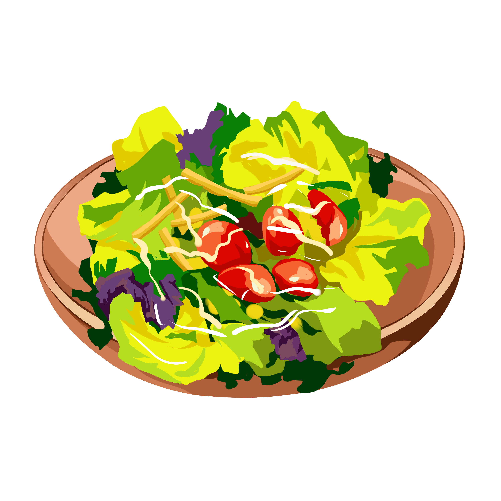
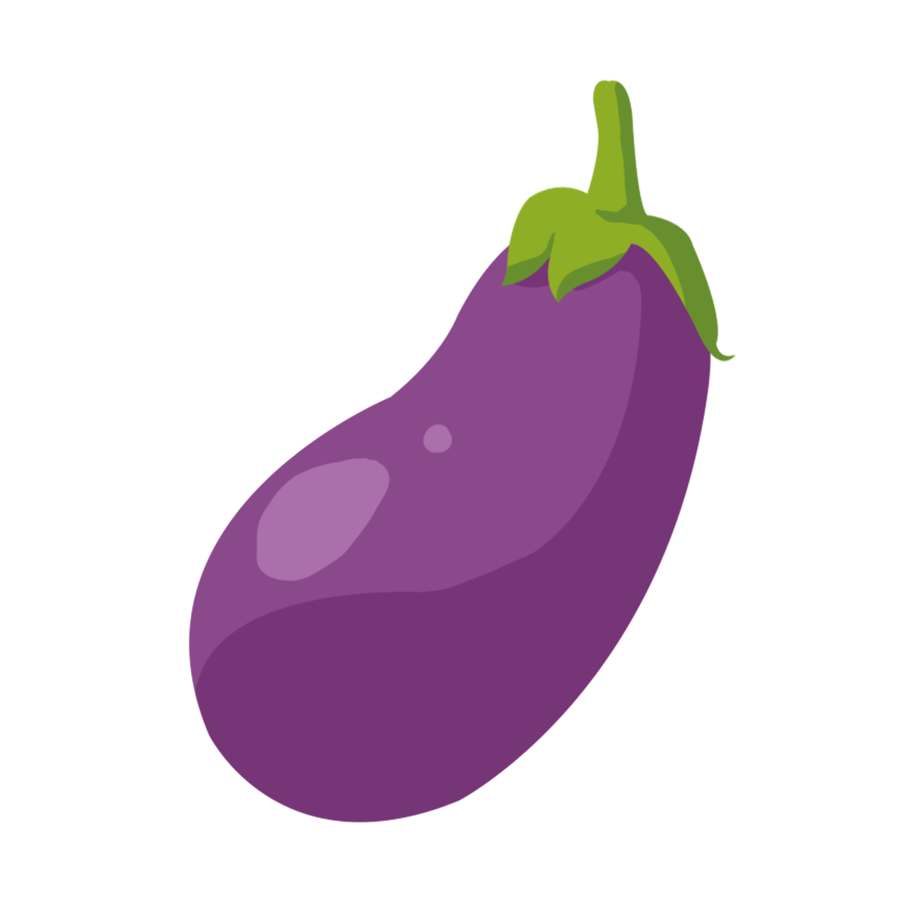
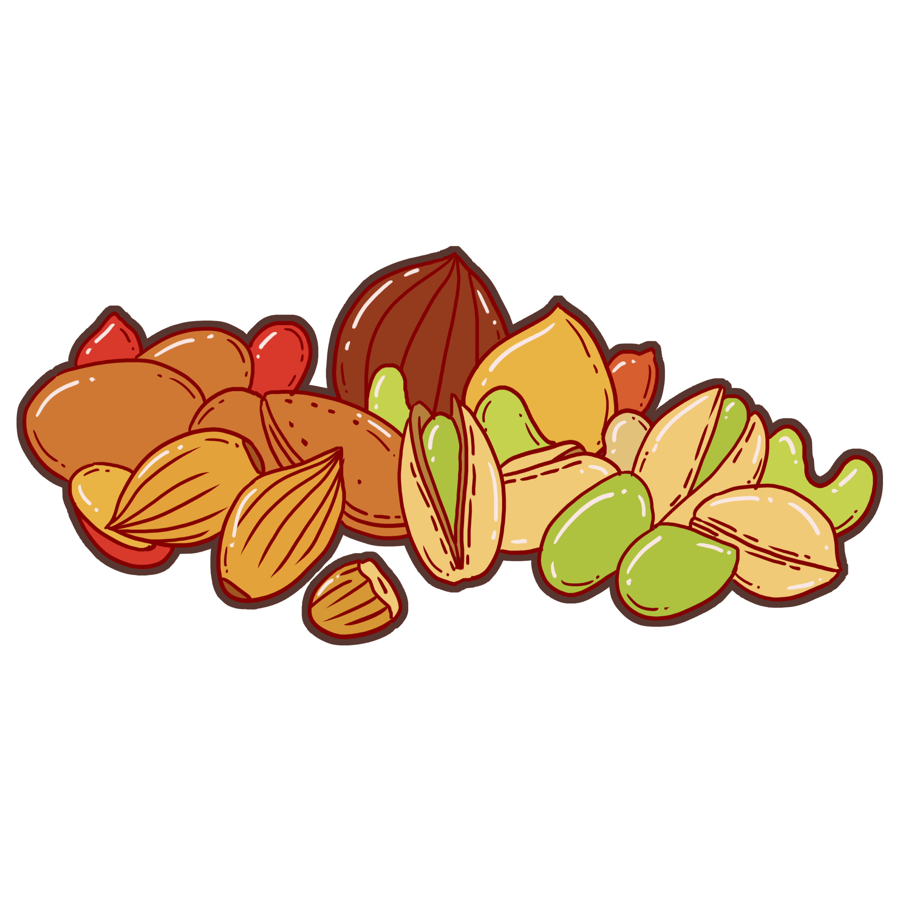
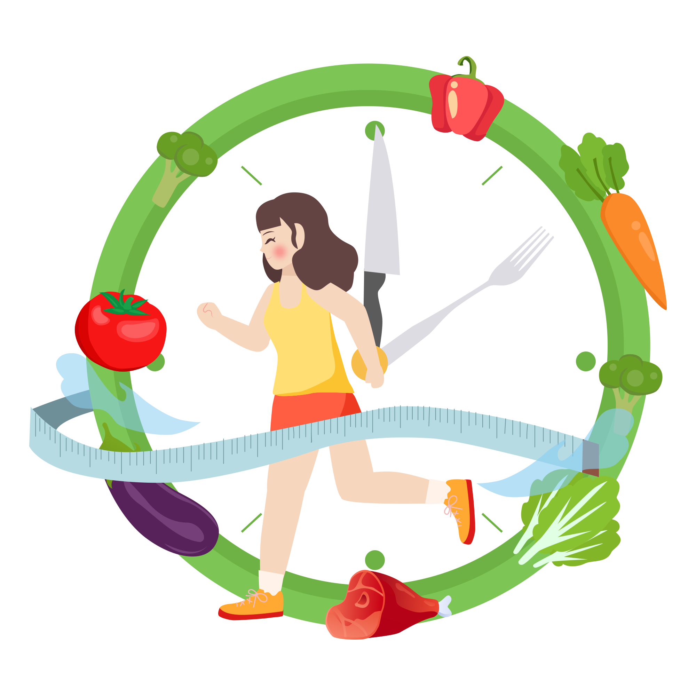

<!DOCTYPE html>
<html lang="en">
<head>
<meta charset="utf-8" />
<title>31370_202403051045</title>
<meta name="viewport" content="width=device-width, initial-scale=1, minimum-scale=1, maximum-scale=1" />
<script src="js/jquery-1.11.3.min.js"></script>
<script src="js/html2canvas.min.js"></script>
<style>
	@font-face {
		font-family: SourceHanSansCN-Heavy;
		src: url('css/font/SourceHanSansCN-Heavy.otf');
	}

	@font-face {
		font-family: SourceHanSansCN-Bold;
		src: url('css/font/SourceHanSansCN-Bold.otf');
	}

	@font-face {
		font-family: SourceHanSansCN-Regular;
		src: url('css/font/SourceHanSansCN-Regular.otf');
	}

	:root {
		--main-bdr-color: #000;
		--title-color: #333333;
		--title-stroke-color: #3e2308;
		--subtitle-color: #333333;
		--subtitle-bg-color: #fffde6;
		--text-color: #545563;
		--summary-color: #546163;
		--summary-color-2: #5d5463;
		--key-color: #eb6100;
		--key-bg-color: #000;
		--list-key-color: #eb6100;
		--list-circle-bdr-color: #000;
		--list-circle-bg-color: #f9ff58;
	}

	ul {
		padding: 0;
		margin: 0;

		li {
			padding: 0;
			margin: 0;
			list-style: none;
		}
	}

	p {
		margin: 0;
		padding: 0;
	}

	i {
		font-style: normal;
	}

	.bg {
		width: 1200px;
		height: 1600px;
		margin: auto;
		overflow: hidden;
		background: url(img/bg/bg_202403051045.jpg) center top no-repeat;
	}

	.content {
		/* padding-top: 100px; */
		margin: 0px 100px 0 200px;
	}

	.title-wrap {
		padding-top: 105px;
		text-align: center;

		h1 {
			display: inline-block;
			position: relative;
			height: 80px;
			line-height: 80px;
			padding-left: 75px;
			margin: 0;
			text-align: center;
			color: var(--title-color);
			/* font-size: 50px; */
			font-size: 47px;
			font-family: SourceHanSansCN-Bold;
		}
	}

	.subtitle {
		display: table;
		position: relative;
		width: auto;
		height: 100px;
		line-height: 100px;
		margin: 20px 0 0;
		color: var(--subtitle-color);

		.right {
			position: relative;
			z-index: 2;
			float: left;
			color: var(--subtitle-color);
			/* font-size: 48px; */
			font-size: 45px;
			font-family: SourceHanSansCN-Bold;

			&::after {
				position: absolute;
				top: 50%;
				right: -60px;
				content: '';
				width: 48px;
				height: 49px;
				transform: translateY(-50%);
				background: url(img/item/icon_correct_001.png) center no-repeat;
				background-size: 100%;
			}
		}

		.line {
			position: absolute;
			left: 0;
			right: 0;
			bottom: 15px;
			z-index: 1;
			content: '';
			height: 32px;
			background: url(img/item/title_line_002.png) center no-repeat;
			background-size: 100% 100%;
		}
	}

	.text {
		line-height: 52px;
		padding: 0px 30px 20px;
		/* padding: 0px 30px 40px; */
		margin-top: 0px;
		text-align: left;
		color: var(--text-color);
		/* font-size: 40px; */
		font-size: 42px;
		font-family: SourceHanSansCN-Regular;

		i {
			color: var(--key-color);
		}
	}

	.text-wrap,
	.pic-wrap {
		position: relative;

		img {
			display: block;
			margin: 0px auto;
			object-fit: cover;
		}
	}

	.summary {
		position: relative;
		line-height: 75px;
		/* margin-top: 50px; */
		margin-top: 0px;
		text-align: left;
		color: var(--summary-color-2);
		font-size: 44px;
		font-family: SourceHanSansCN-Regular;

		i {
			position: relative;
			z-index: 1;
			color: var(--list-key-color);

			/* &::after {
				position: absolute;
				left: 0;
				right: 0;
				bottom: -10px;
				content: '';
				z-index: -1;
				content: '';
				height: 25px;
				background-color: rgba(163, 231, 117, 0.3);
			} */
		}

		/* i.first {
			&::after {
				border-radius: 8px 0 0 8px;
			}
		}

		i.last {
			&::after {
				border-radius: 0 8px 8px 0;
			}
		} */
	}

	.summary-title {
		display: inline-block;
		position: relative;
		width: auto;
		height: 100px;
		line-height: 100px;
		margin: 20px 0 0;
		color: var(--subtitle-color);

		.right {
			position: relative;
			z-index: 2;
			float: left;
			color: var(--subtitle-color);
			font-size: 48px;
			font-family: SourceHanSansCN-Bold;
		}

		.line {
			position: absolute;
			left: 0;
			right: 0;
			bottom: 10px;
			z-index: 1;
			content: '';
			height: 24px;
			background: url(img/item/title_line_001.png) center no-repeat;
			background-size: 100% 100%;
		}
	}

	.summary-wrap {
		position: relative;
		padding-right: 300px;

		img {
			display: block;
			position: absolute;
			right: 0;
			top: 50%;
			object-fit: cover;
			transform: translateY(-50%);
		}
	}
</style>
</head>

<body>
<div class="bg" id="html-canvas">
	<div class="title-wrap">
		<h1 id="title"></h1>
	</div>
	<div class="content" id="content"></div>
</div>
</body>
<script>
var jsonText = [
	{
		title: '抗磷脂酶A2抗体高？吃货教你如何详细调整',

		page: [
			{
				content: [
					/* {
						subtitle: '早餐篇',
						subContent:
							`
								早餐是一天中最重要的一餐，对于抗体偏高的我们来说更是如此。我建议大家选择<span>富含纤维和蛋白质</span>的早餐。 
								
								<br><br>
								一碗<span>燕麦粥</span>（用<span>牛奶或水煮</span>，可以加入<span>少许蜂蜜</span>或<span>水果</span>增加口感），搭配一个<span>水煮蛋</span>和<span>几片全麦吐司</span>。这样的早餐既营养又饱腹，能为你的一天提供足够的能量。 
								
							`,
					},
					{
						subtitle: '午餐篇',
						subContent:
							`
								午餐要注重营养均衡，<span>蔬菜</span>、<span>肉类</span>和<span>主食</span>都<span>不能少</span>。 
								
								<br><br>
								一份<span>蔬菜沙拉</span>（可以选择<span>生菜、小番茄、黄瓜、胡萝卜</span>等蔬菜，搭配<span>低脂沙拉酱</span>），再加上一份<span>蒸鸡胸肉</span>（用<span>少许盐</span>和<span>黑胡椒</span>调味）和<span>一碗糙米饭</span>。这样的午餐既美味又健康，能满足你的味蕾和身体需求。 
								
							`,
					}, */

					/* {
						subtitle: '晚餐篇',
						subContent:
							`
								晚餐要<span>尽量清淡</span>，避免给身体造成太大的负担。 
								
								<br><br>
								一碗<span>紫菜蛋花汤</span>（将<span>紫菜剪成小块</span>，加入<span>鸡蛋</span>和<span>豆腐</span>，用<span>少许盐</span>和<span>鸡精调味</span>），再加上一份<span>烤蔬菜</span>（可以选择<span>西兰花</span>、<span>胡萝卜</span>、<span>茄子</span>等蔬菜，撒上<span>少许橄榄油</span>和<span>盐</span>，<span>烤至熟透</span>）。这样的晚餐既简单又营养，能帮助你放松身心，迎接美好的夜晚。 
								
							`,
					},
					{
						subtitle: '加餐篇',
						subContent:
							`
								除了正餐外，适当的加餐也是必不可少的。我建议大家选择<span>水果</span>、<span>坚果</span>等健康食物作为加餐。 
								
								<br><br>
								一个<span>苹果</span>、一根<span>香蕉</span>、一小把<span>坚果</span>（如<span>核桃</span>、<span>杏仁</span>等）。这些食物富含维生素、矿物质和膳食纤维，能帮助你补充能量和营养，同时增强饱腹感，避免在正餐时暴饮暴食。  
								
							`,
					}, */

					{
						subtitle: '饮水篇',
						summary:
							`
								多喝水也是降低抗磷脂酶A2受体抗体水平的重要方法之一。我建议大家<span>每天至少喝8杯水（约2升）</span>，以保持身体的水分平衡和新陈代谢的正常进行。
								
								<br><br>
								如果你觉得白开水太单调，也可以尝试加入一些<span>柠檬片、薄荷叶</span>等增加口感。
								
								
								<br><br>
								面对抗磷脂酶A2受体抗体增高的问题，我们不必过于担忧。通过合理的<span>饮食调整</span>和<span>生活习惯</span>的改善，我们可以把抗体水平降下来，恢复健康的身体状态。希望我的分享能对大家有所帮助。
							`,
					},
					
				],
			},
		]
	}
];

function setHtml() {
	var html = '';

	jsonText.forEach(function (item, i) {
		var setTitle = item.title || '';
		var setObj = item.page;

		setObj.forEach(function (obj, j) {
			html = '';
			
			obj.content?.forEach(function (contentItem) {
				if (contentItem.subContent) {
					html += `
						<div class="${contentItem.picUrl ? 'pic-wrap' : 'text-wrap'}">
							${contentItem.subtitle ? `
								<div class="subtitle">
									<p class="right">${contentItem.subtitle || ''}</p>
									<i class="line"></i>
								</div>
							` : ''}
							<p class="text" style="${contentItem.subContentStyle || ''}">${contentItem.subContent}</p>
							${contentItem.picUrl ? `  ` : ''}
						</div>`;
				} 
				else if (contentItem.summary) {
					html += `
						<div class="${contentItem.picUrl ? 'summary-wrap' : ''}">
							<div class="summary-title">
								<p class="right">${contentItem.subtitle}</p>
								<i class="line"></i>
							</div>
							<p class="summary">${contentItem.summary}</p>
							${contentItem.picUrl ? `  ` : ''}
						</div>`;
				}
			});

			var $tl = document.getElementById('title');
			var $cont = document.getElementById('content');
			if ($tl) {
				$tl.innerHTML = setTitle;
			}
			$cont.innerHTML = html;
			setKeyWords();
			saveImg(setTitle, j);
		});
	}); 
}

function saveImg(setTitle = '', j = 0) {
	var realHtml = document.getElementById('html-canvas');
	var width = 1200; //获取dom 宽度

	var img_type = 'jpeg';
	// var height = realHtml.offsetHeight; //获取dom 高度
	var height = 1600; //获取dom 高度
	var canvas = document.createElement('canvas'); //创建一个canvas节点
	var scale = 1; //定义任意放大倍数 支持小数
	canvas.width = width * scale; //定义canvas 宽度 * 缩放
	canvas.height = height * scale; //定义canvas高度 *缩放
	canvas.getContext('2d').scale(scale, scale); //获取context,设置scale
	var opts = {
		tainttest: true, //检测每张图片都已经加载完成
		scale: scale, // 添加的scale 参数
		useCORS: true,
		canvas: canvas, //自定义 canvas
		logging: true, //日志开关
		width: width, //dom 原始宽度
		height: height, //dom 原始高度
		name: 'pic'
	};
	html2canvas(realHtml, opts).then(function (canvas) {
		var imgUri = canvas.toDataURL('image/' + img_type, 0.9);
		var saveLink = document.createElement('a');
		saveLink.href = imgUri;
		saveLink.download = setTitle + (j + 1) + '.' + (img_type === 'jpeg' ? 'jpg' : img_type);
		saveLink.click();
	});
}

function setKeyWords(parent = document) {
	const spans = parent.querySelectorAll('span');
	spans.forEach((span, i) => {
		const text = span.textContent;
		const characters = text.split('');
		const wrappedCharacters = characters.map((char, index, arr) => {
			if (index === 0) {
				return `<i class="first">${char}</i>`;
			}
			else if (index === arr.length - 1) {
				return `<i class="last">${char}</i>`;
			}
			else {
				return `<i>${char}</i>`;
			}
		});
		const wrappedText = wrappedCharacters.join('');
		span.outerHTML = wrappedText;
	});
}

setHtml()
</script>
</html>
